Guía de la red de casa
Conéctate a la red de casa y usa la nube de casa desde el móvil
Solo sigue los pasos; no hace falta saber de informática
1. Qué necesitas antes de empezar
- Un iPhone (esta guía usa un iPhone)
- Tu contraseña del Apple ID (puede hacer falta para descargar apps)
- Que el móvil tenga Internet (Wi-Fi o datos móviles)
- La «dirección personal» que te envió el administrador, con este aspecto:
https://………/p/una-cadena-larga-de-letras-y-números/
2. Elige una
Hay dos apps para conectarte a casa. Elige solo una; no hacen falta las dos. ¿Dudas? Pregunta al administrador.
🚀 Opción A: Shadowrocket
App de pago- La más fácil: un toque y listo
- Sin crear cuenta
- Ideal para: navegar a través de la red de casa
🔵 Opción B: Tailscale
Gratis- Inicias sesión con Google o Apple
- El administrador tiene que invitarte antes
- Ideal para: quien necesita usar los ordenadores de casa
3. Abre «Mi página»
Elijas la opción que elijas, usarás esta página. Te dice qué puedes usar y hasta cuándo, y desde aquí también usas la nube.
Abre la dirección que te dio el administrador
Toca la dirección en LINE o Mensajes; el iPhone la abre en Safari.
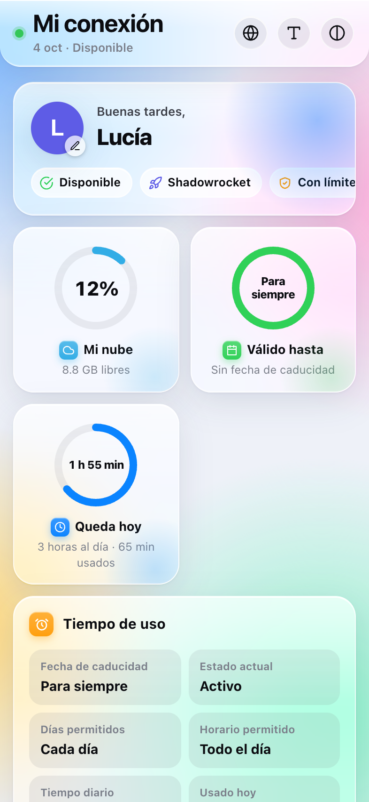
Ponla en la pantalla de inicio (luego se abre con un toque)
- Toca el botón Compartir abajo en el centro de Safari (un cuadrado con una flecha hacia arriba ⬆︎)
- Desliza hacia abajo y toca Añadir a pantalla de inicio
- Toca Añadir arriba a la derecha
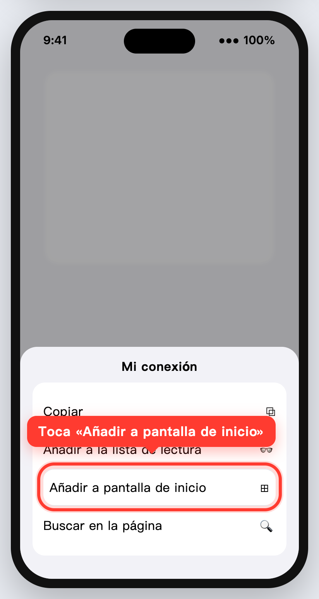
4. Opción A: Shadowrocket De pago
Descarga Shadowrocket
- Abre la App Store en el iPhone (el icono azul con una «A»)
- Toca Buscar abajo a la derecha y escribe Shadowrocket
- Busca la app con el icono de un cohete azul y toca el botón del precio para comprarla
- Confirma el pago con Face ID o la contraseña del Apple ID
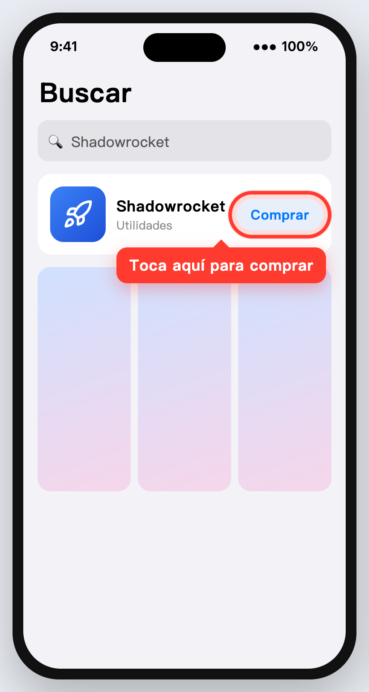
Impórtala desde «Mi página» con un toque
- Abre Mi página y baja hasta el apartado Shadowrocket
- Toca el botón azul Abrir en Shadowrocket
- Cuando pregunte «¿Abrir en Shadowrocket?», toca Abrir
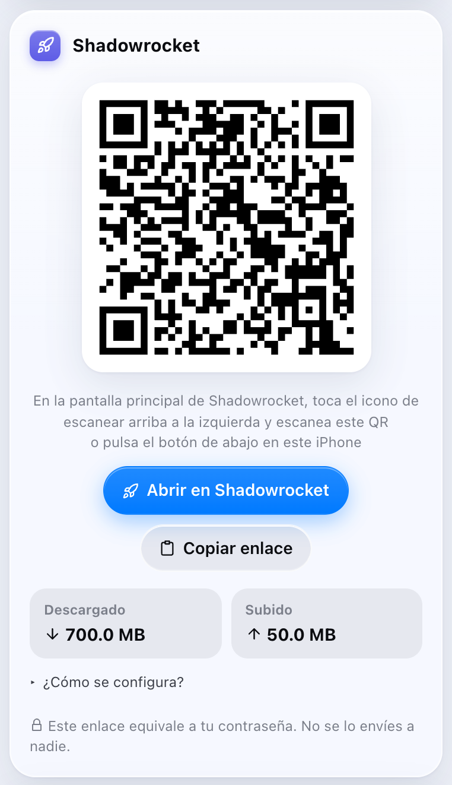
Solo ejemplo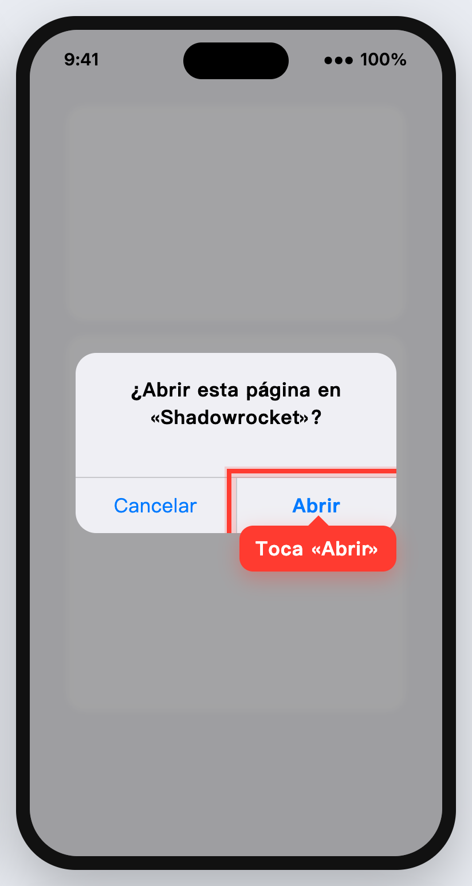
La primera vez: permite la VPN
La primera vez que actives el interruptor, el iPhone preguntará si añadir una configuración VPN. Toca Permitir y escribe el código del iPhone o usa Face ID.
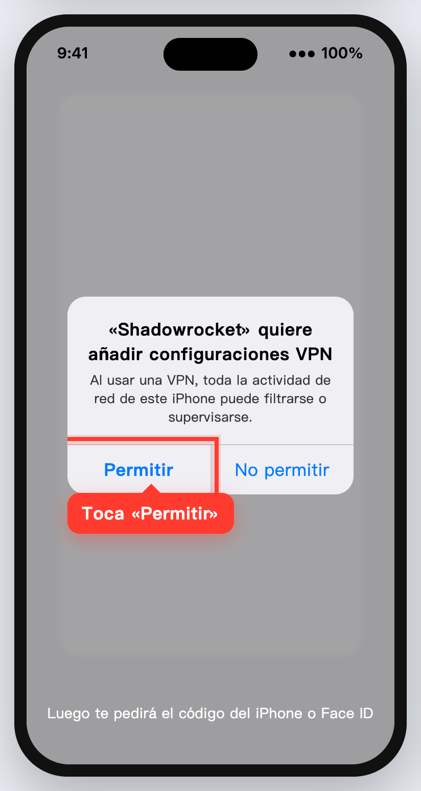
Activa el interruptor
- Comprueba que «El Mac de casa» tiene una marca ✓ en la lista de abajo
- En «Enrutamiento global» elige Proxy
- Activa el interruptor de arriba (se pone verde)
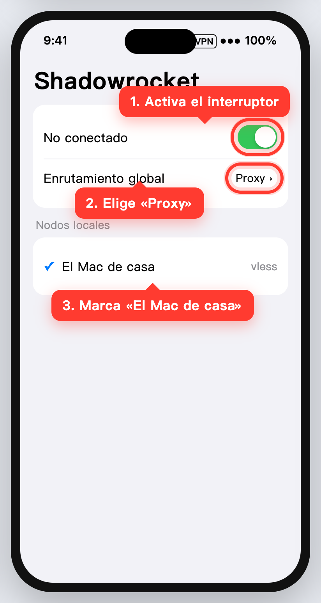
Comprueba que funciona
Abre api.ipify.org en Safari; verás una serie de números. Si coincide con la que te dio el administrador, ¡funciona!
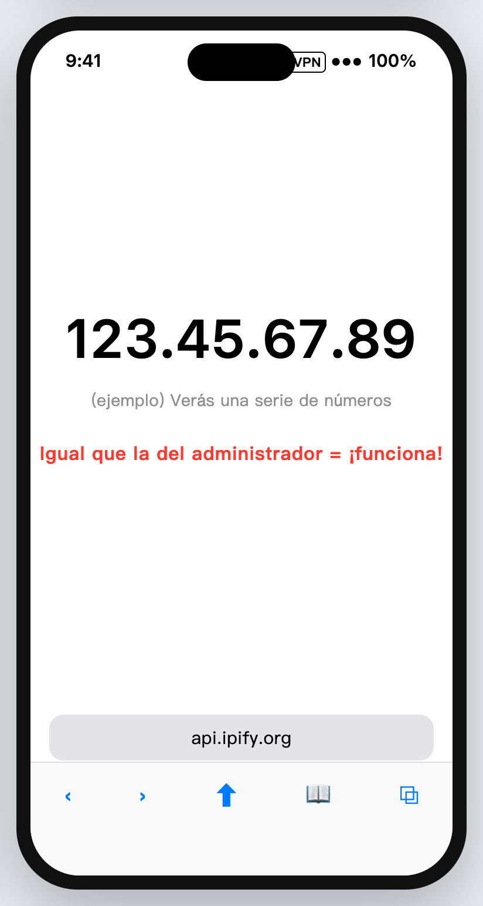
¿Cómo se usa a diario?
- Cuando la necesites: abre Shadowrocket y activa el interruptor
- Cuando no: apaga el interruptor (ahorra batería)
- También puedes usar el interruptor en Ajustes → VPN del iPhone
5. Opción B: Tailscale Gratis
Descarga Tailscale
- Abre la App Store y busca Tailscale
- Toca Obtener (gratis) y confirma con Face ID o la contraseña
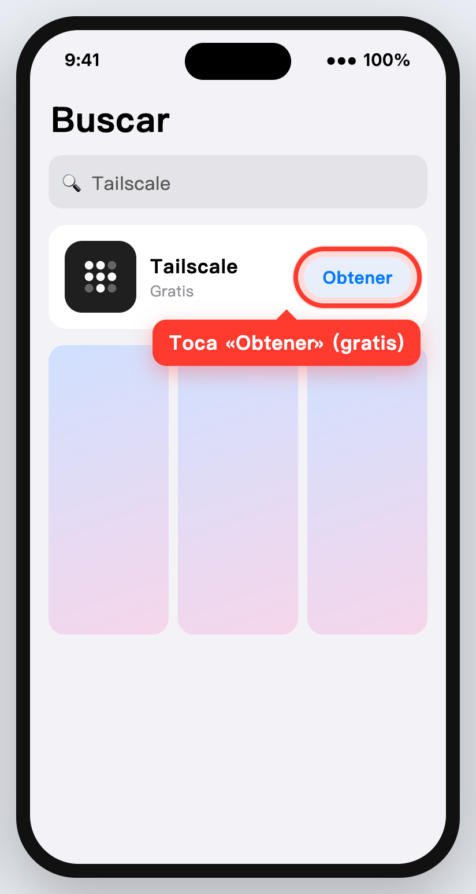
Acepta la invitación e inicia sesión
- Abre el enlace de invitación del administrador y toca «Accept»
- Abre la app de Tailscale y toca Log in
- Inicia sesión con la cuenta que usas siempre (Google o Apple)
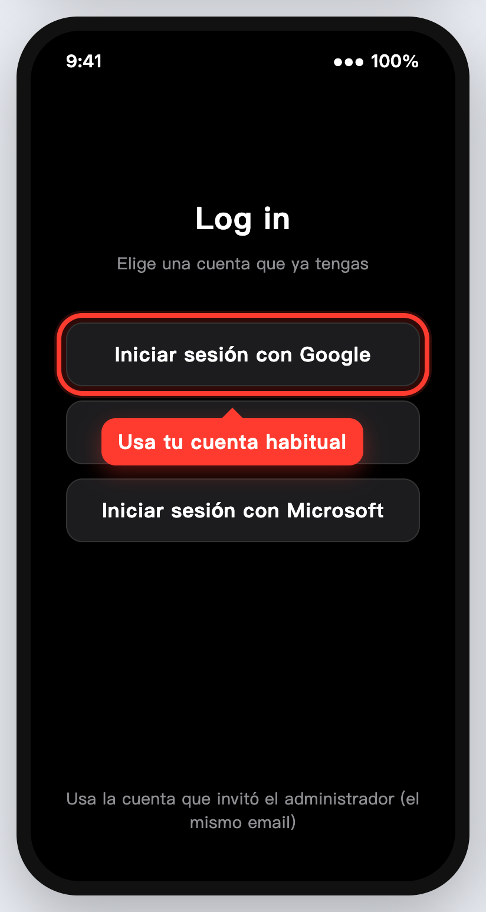
Permite la VPN
Igual que con Shadowrocket, la primera vez pregunta si añadir una configuración VPN (llamada Tailscale). Toca Permitir y escribe el código del iPhone o usa Face ID.
Conéctate y elige «Ordenador de casa»
- Activa el interruptor de arriba (se pone verde)
- Toca Exit Node
- Elige Ordenador de casa (pregunta al administrador el nombre real)
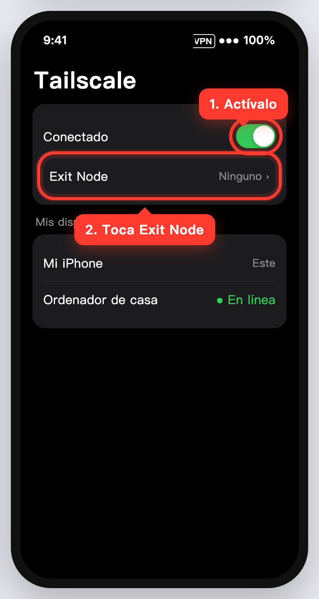
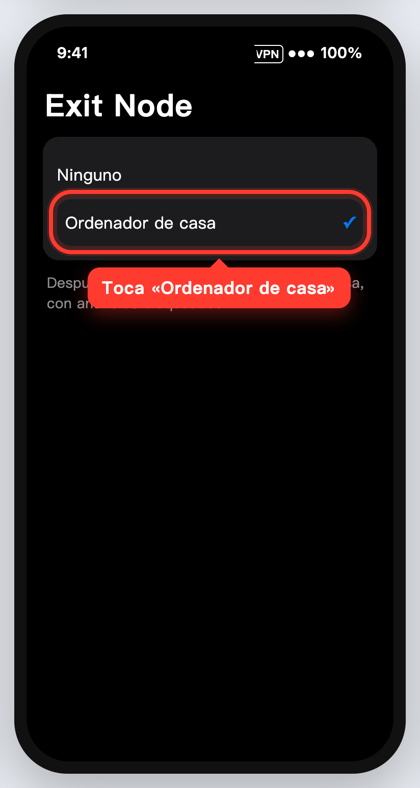
Comprueba que funciona
Igual que en la opción A: abre api.ipify.org en Safari; si los números coinciden con los del administrador, funciona.
6. Guarda fotos y archivos en «Mi nube»
Si el administrador te activó la nube, en Mi página verás «Mi nube». Puedes guardar fotos, vídeos y documentos en el disco de casa y no perderlos al cambiar de móvil.
Dos carpetas
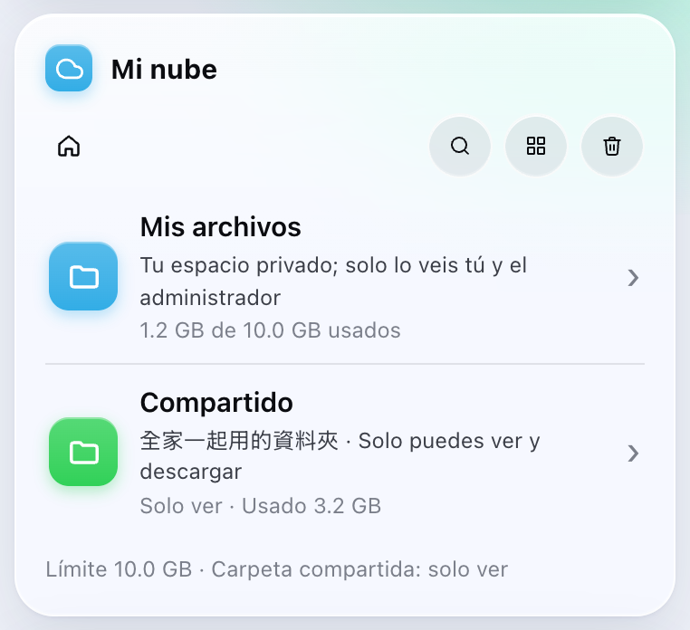
- Mis archivos: tu espacio, que solo veis tú y el administrador. Muestra cuánto has usado y tu límite.
- Compartida: una carpeta para toda la familia. Si puedes guardar cosas en ella lo decide el administrador.
Sube fotos o vídeos
- Toca Mis archivos para entrar
- Toca el botón azul Subir
- Elige Fototeca, marca las fotos o vídeos y toca Añadir
- Cuando termina la barra aparece «Subido». Debajo verás la velocidad y cuánto falta
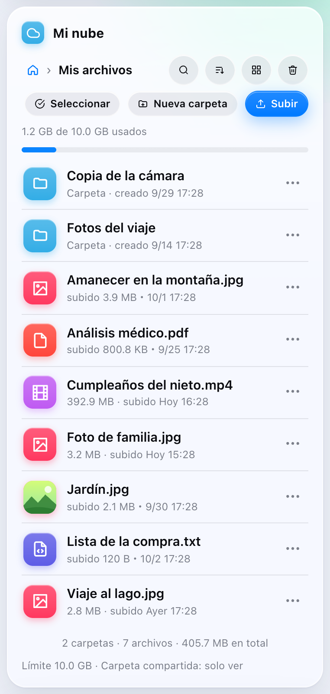
Para qué sirven los botoncitos de arriba
- 🔍 Buscar: escribe parte de un nombre, p. ej. «cumpleaños», para encontrar esos archivos en todas las carpetas
- ↕️ Ordenar: por nombre, subida, modificación, tamaño o tipo. Para ver lo último subido, elige «Subido»
- ▦ Cambiar vista: entre «lista» y «álbum». El álbum muestra las fotos en cuadrícula, como la app Fotos
- 🗑 Papelera: lo que borras va aquí primero (mira el paso 6)
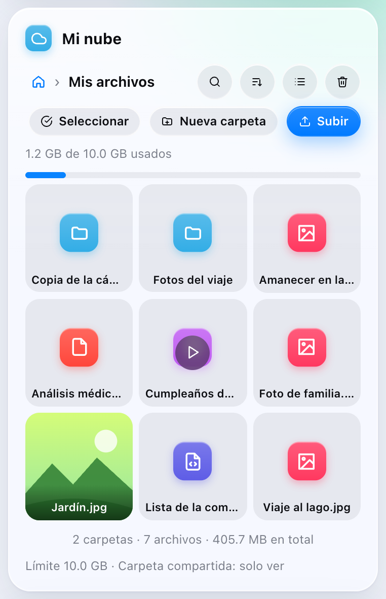
Toca para verlo enseguida
Sin descargar; toca para abrirlo en el móvil:
- Fotos, vídeos, música: se ven y se reproducen directamente. Desliza a izquierda o derecha para el anterior o el siguiente
- PDF, Word, Excel, PowerPoint, Pages, Keynote: muestra la primera página. En los PDF toca Abrir PDF para verlo entero; en Word toca Ver texto para el texto completo
- Archivos de texto (.txt) y tablas (.csv): se muestra el contenido; los CSV aparecen como tabla

Toca ⋯ para más opciones
Cada archivo tiene ⋯ a la derecha. Tócalo para ver:
- Descargar: lo guarda en el móvil. En una carpeta pasa a ser Descargar ZIP, toda la carpeta de una vez
- Detalles: tamaño, fecha de subida, megapíxeles de la foto o duración del vídeo
- Compartir: crea un enlace para enviar a amigos (mira «Compartir con otros» abajo)
- Renombrar, Mover (a otra carpeta), Eliminar
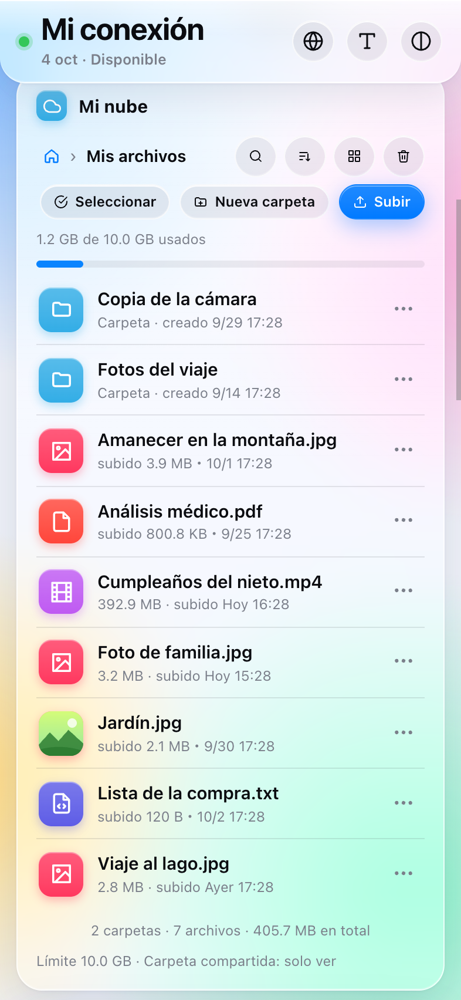
Organiza muchos archivos a la vez
- Toca Seleccionar
- Toca los archivos; aparece una marca azul ✓ delante (toca Todos para marcarlos todos)
- Toca Mover para llevarlos a otra carpeta, o Eliminar
- Al terminar, toca Listo
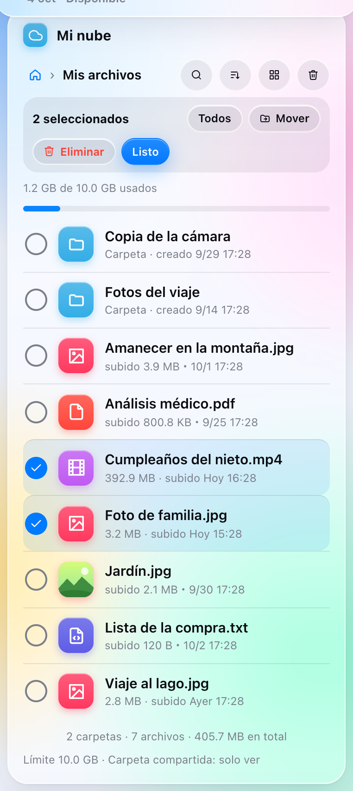
Al Mover aparece una lista de carpetas: toca una para entrar y, cuando estés donde quieres, toca Mover aquí.
¿Borraste algo sin querer? Recupéralo de la papelera
Los archivos borrados no desaparecen enseguida: quedan 30 días en la papelera y luego se eliminan solos.
- Toca 🗑 Papelera en la fila de arriba
- Busca el archivo y toca Restaurar; vuelve a su carpeta original
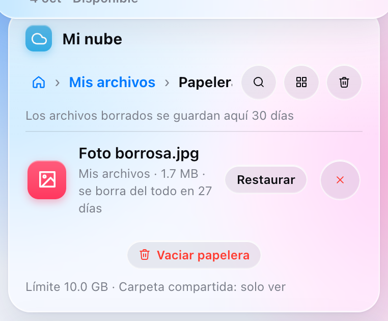
Compartir con otros (no necesitan ninguna app)
- En un archivo o carpeta toca ⋯ → Compartir
- Elige la validez (1 día, 7 días, 30 días, para siempre)
- Puedes limitar cuántas descargas y poner una contraseña
- Toca Crear enlace; se copia solo, así que pégalo en LINE y envíalo

7. Copia diaria de las fotos del iPhone
La app integrada Atajos del iPhone guarda cada noche las fotos del día en la carpeta «Copia de la cámara» de tu nube. Sin otra app y sin VPN; basta con tener Internet.
Primero copia tu dirección de subida
En Mi página busca «Copia automática de fotos del iPhone» y toca Copiar dirección de subida.
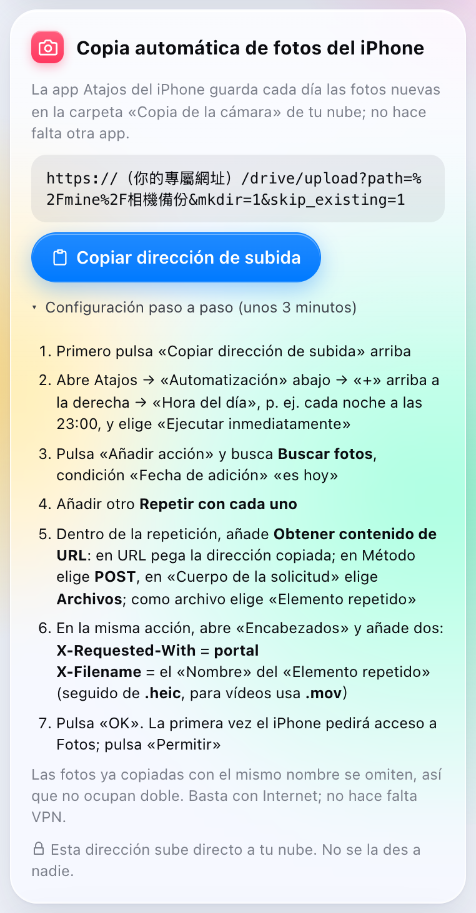
Añade una automatización en Atajos
- Abre la app Atajos (si no la encuentras, desliza hacia abajo en la pantalla de inicio y busca «Atajos»)
- Toca Automatización abajo y luego ＋ arriba a la derecha
- Elige Hora del día, ponla cada día a las 23:00, elige Ejecutar inmediatamente y toca Siguiente
Añade tres acciones
- Toca Añadir acción, busca Buscar fotos y añádela. Toca «Añadir filtro» y pon Fecha de adición · es hoy
- Luego busca Repetir con cada uno y añádela
- Dentro de «Repetir», añade Obtener contenido de URL:
- URL: pega la dirección que copiaste
- Toca «Mostrar más» y en Método elige POST
- En Cuerpo de la solicitud elige Archivo y como archivo Elemento repetido
- En Encabezados toca «Añadir encabezado» dos veces:
Primero: nombreX-Requested-With, valorportal
Segundo: nombreX-Filename, valor: el Nombre del Elemento repetido seguido de.heic
(si en Ajustes → Cámara → Formatos está «Más compatible», escribe.jpg)
Pruébalo una vez
Toca ▶︎ abajo a la derecha para probar. La primera vez el iPhone pide acceso a Fotos; toca Permitir. Después mira en «Mi nube → Mis archivos → Copia de la cámara»: deberían estar las fotos de hoy.
8. Otras funciones útiles
Texto grande (para los mayores)
Toca T arriba a la derecha de tu página y todo el texto y los botones se agrandan. El móvil lo recuerda para la próxima vez. Toca T otra vez para volver al tamaño normal.
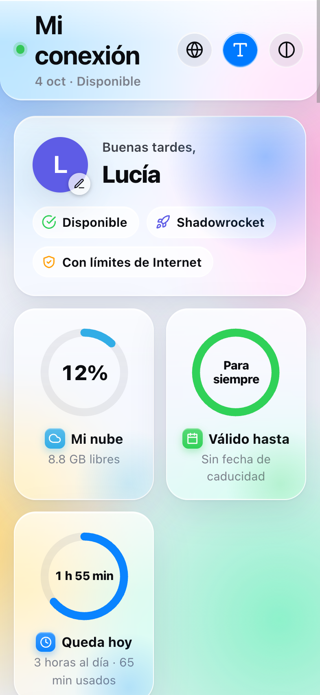
Cuánto tiempo queda hoy
Si el administrador fijó cuánto puedes usarlo al día, tu página muestra un círculo azul «Queda hoy» con los minutos restantes.
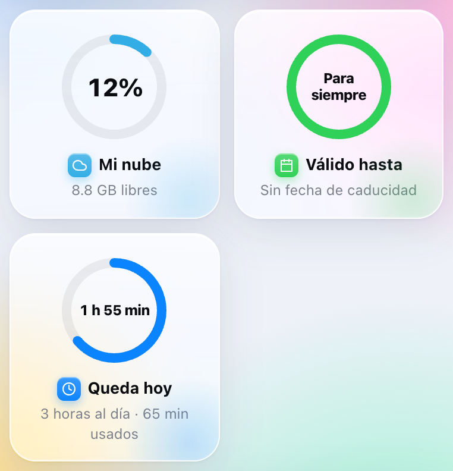
- Solo cuenta mientras usas Internet de verdad; tenerlo activado sin usarlo no descuenta
- Cuando se acaba no puedes conectarte ese día; se restablece solo a medianoche
- ¿No te llega? Escribe al administrador para pedir más
Escribir al administrador
Para ampliar tu acceso, pedir más espacio o más tiempo diario, o si algo falla, escribe directamente desde la página:
- En «Escribir al administrador» elige un tema, p. ej. Más espacio en la nube
- Si quieres, añade detalles en el cuadro de abajo (opcional)
- Toca Enviar
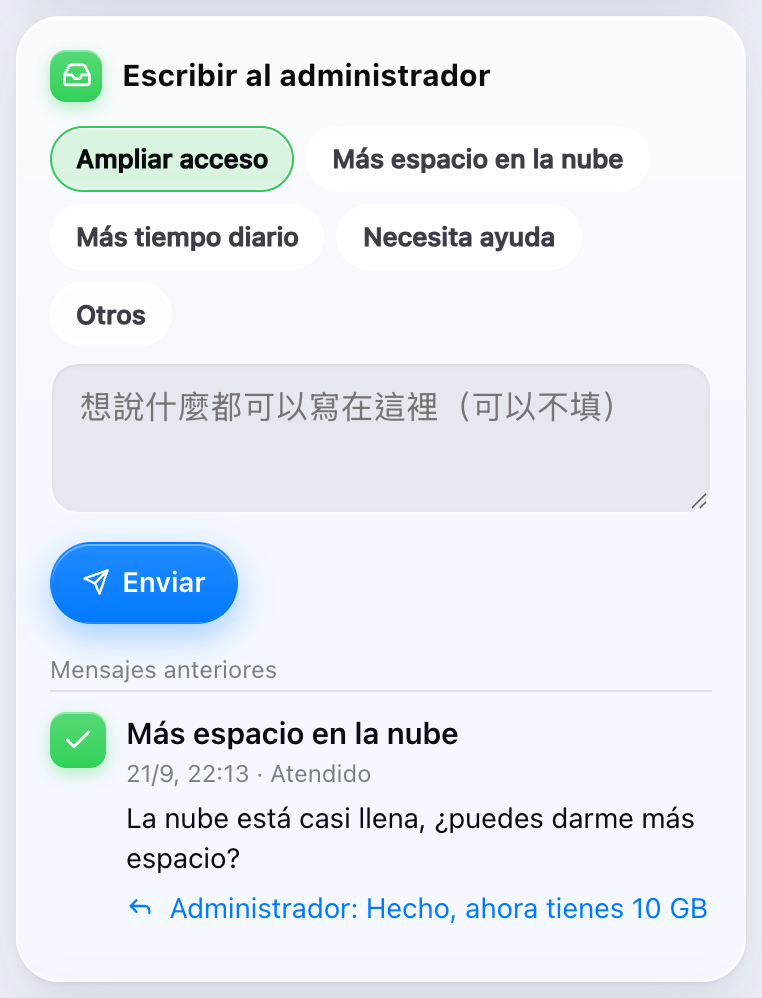
El móvil del administrador recibe un aviso al momento. Su respuesta aparece en «Mensajes anteriores»; una marca verde significa que está resuelto.
Prueba de velocidad
Si va lento, ve a «Comprobar conexión» al final de la página y toca Inicio junto a Prueba de velocidad; en unos 10 segundos verás la velocidad de bajada y subida.
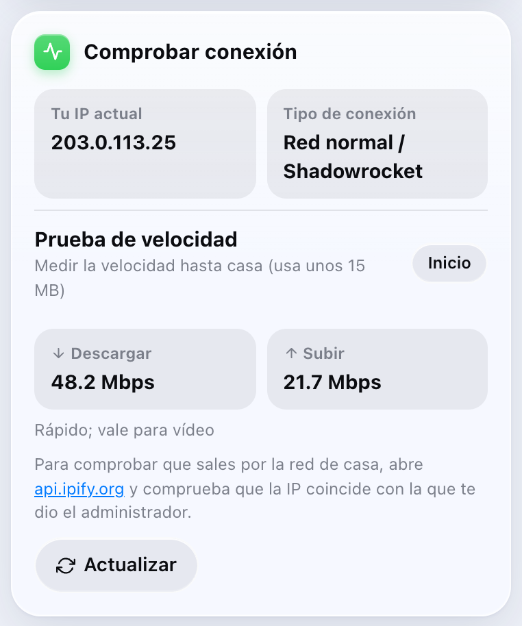
- 20 Mbps o más: rápido, vale para vídeo
- 5–20 Mbps: bien para el uso diario
- Menos de 5 Mbps: lento; prueba en otro sitio u otra Wi-Fi
9. Mira cómo está el Mac de casa Con acceso al panel
La red y la nube de casa funcionan con un Mac. Si el administrador te dio el «panel de control», puedes ver lo ocupado y caliente que está y cómo va su batería. Esta página es solo para mirar y no cambia ningún ajuste, tranquilo.
Abre la página «Mac»
- Abre el panel de control (activa Tailscale antes)
- Toca Ajustes abajo y luego Mac arriba
O en el inicio del panel, toca el círculo de CPU o Memoria para venir aquí directamente.
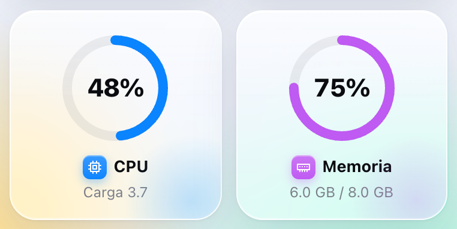
Arriba: el estado actual de un vistazo
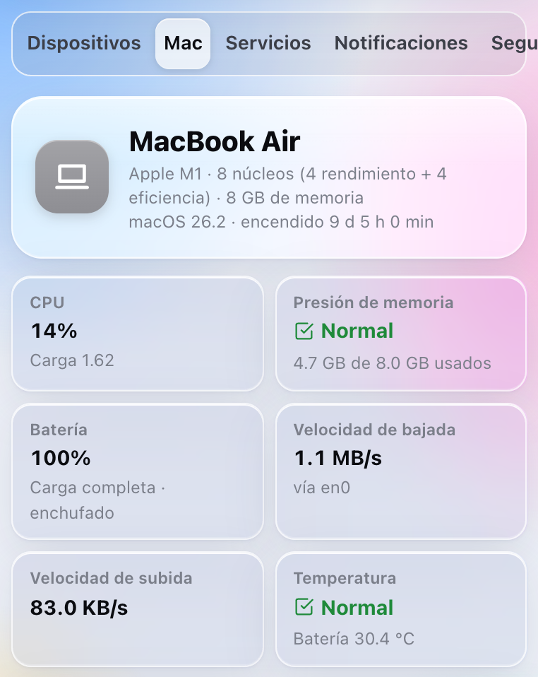
- CPU: lo ocupado que está. Normalmente menos del 20%; los picos breves no importan
- Presión de memoria: «Normal» en verde está bien; «Alta» en naranja significa demasiadas apps abiertas y el ordenador va más lento
- Velocidad de bajada / subida: cuántos datos mueve ahora el Mac de casa
- Temperatura: «Normal» en verde; «Limitado por calor» en rojo significa que está demasiado caliente y se frena solo
Tendencias: las últimas 24 horas
Elige la última 1 hora, 6 horas o 24 horas. Toca la gráfica con el dedo para ver los valores de ese momento; toca fuera para ocultarlos.
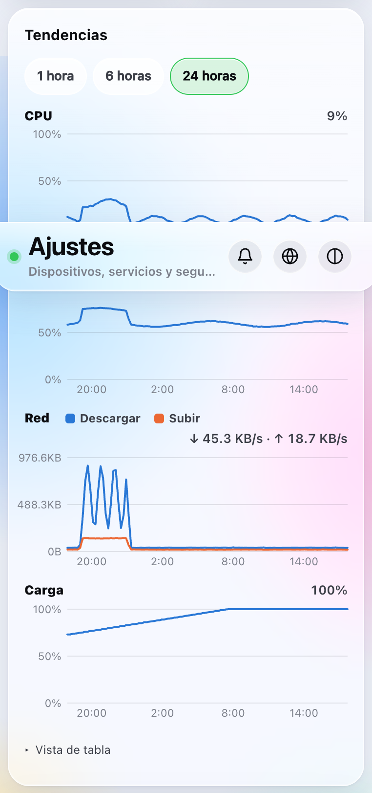
¿No te gustan las gráficas? Toca Vista de tabla abajo para ver los números de cada momento.
Batería
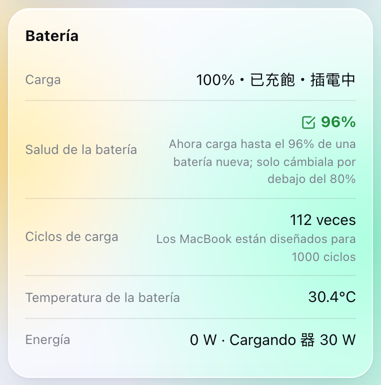
- Salud de la batería: cuánto carga comparada con una nueva. 80% o más es normal; solo por debajo del 80% conviene pensar en cambiarla
- Ciclos de carga: cuántas vueltas ha dado la batería. Los MacBook están diseñados para 1000
- Temperatura de la batería: entre 30 y 40 °C es normal; por encima de 40 °C se pone naranja como aviso
Memoria: por qué va lento el ordenador
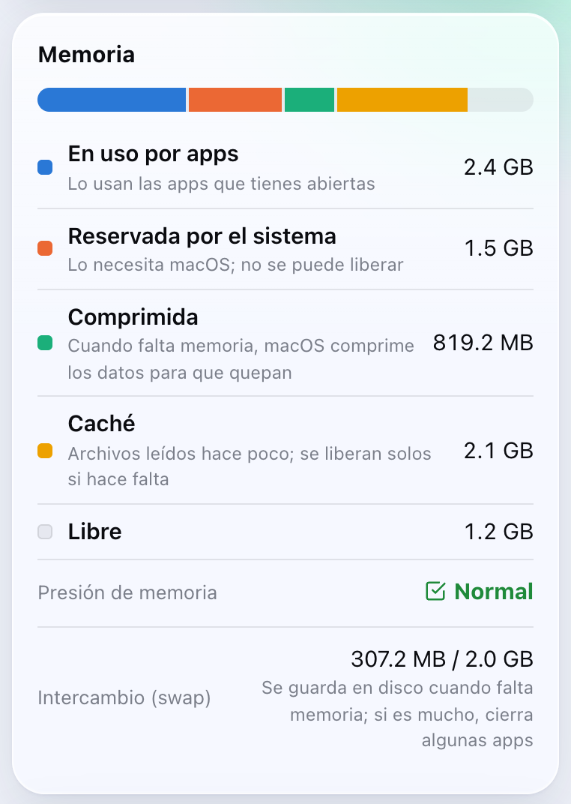
- La barra tiene varios colores, cada uno con su explicación y su uso al lado
- La caché no es problema; se libera sola cuando hace falta
- Mucha memoria comprimida y swap significa que falta memoria; el ordenador va lento y se calienta
Apps que más consumen
Cambia entre ordenar Por CPU o Por memoria. Varias copias de la misma app (p. ej. cada pestaña del navegador) se juntan en una fila con ×cantidad.
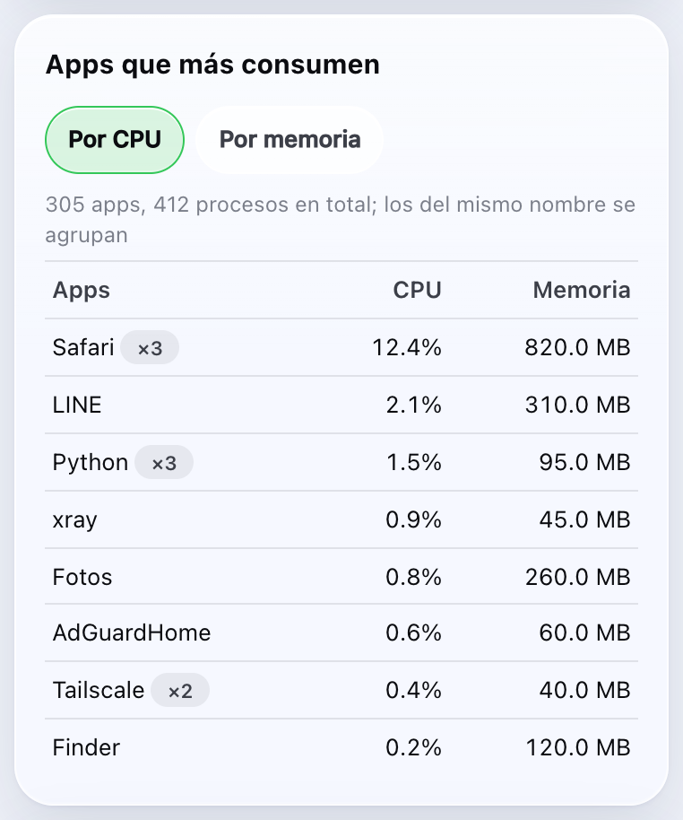
10. Controla un PC con Windows desde el móvil Administrador
Si hay un PC con Windows en casa, puedes controlarlo desde el móvil igual que el Mac: ver si se usa, cambiar de canción, subir el volumen, mostrar un aviso a quien lo usa, bloquearlo, apagarlo. Solo el administrador (propietario del panel) ve esta función.
Instala primero Tailscale en Windows
- En Windows, descárgalo e instálalo desde tailscale.com/download
- Inicia sesión con la misma cuenta que en el móvil (importante: con otra cuenta no conectará)
- El icono de Tailscale abajo a la derecha debe mostrar Conectado
Genera el comando de instalación en el móvil
- Abre el panel y toca Remoto abajo
- Toca ＋ Windows arriba y luego Generar comando de instalación
- Toca Copiar comando y envíalo al PC por LINE o email
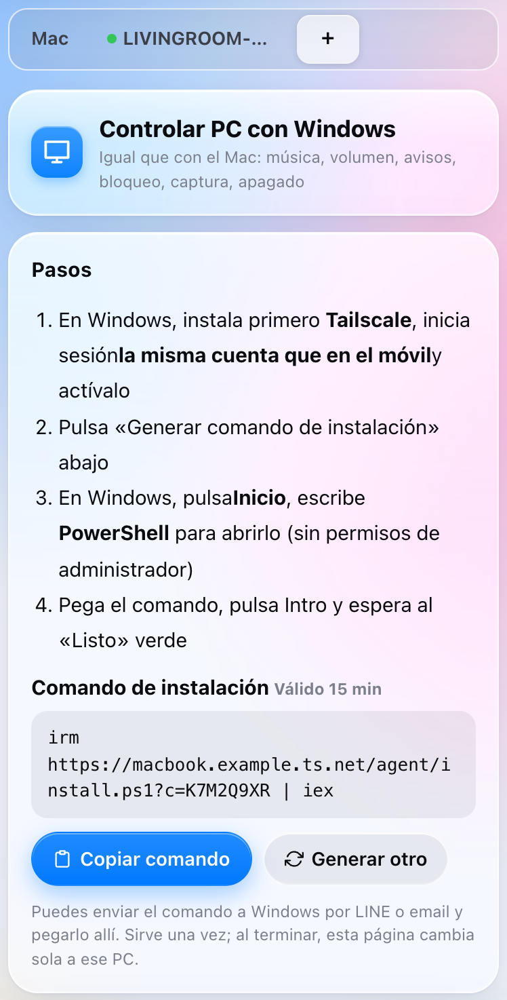
Pega el comando en Windows
- Pulsa la tecla ⊞ Windows (o Inicio abajo a la izquierda), escribe PowerShell y pulsa Intro para abrirlo
- En la ventana azul o negra, haz clic derecho (o Ctrl+V) para pegar el comando y pulsa Enter
- Cuando veas un «¡Listo!» en verde, ya está y puedes cerrar la ventana
Mira su estado y controla la música
Los botones de arriba cambian entre el Mac y cada PC con Windows. Un punto verde junto al nombre significa que está encendido y accesible.
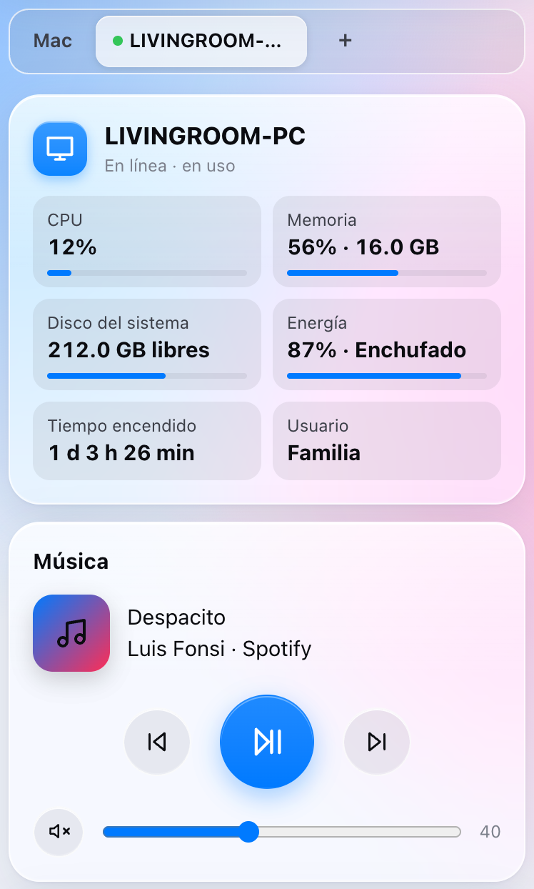
- En línea · en uso / inactivo / bloqueado: te dice si alguien lo está usando ahora
- Música: ve qué suena en Spotify, YouTube en el navegador y más; pausa, cambia de canción y ajusta el volumen
Pantalla y energía
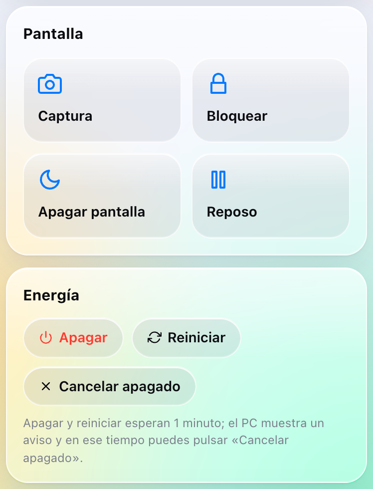
- Captura: mira lo que hay ahora en la pantalla (no si está bloqueado)
- Reposo, apagar y reiniciar necesitan dos toques, para no activarlos sin querer
- Apagar y reiniciar esperan 1 minuto y muestran un aviso en el PC; ¿cambiaste de idea? Toca Cancelar apagado
Más abajo: mostrar aviso y leer en voz alta (p. ej. «¡A cenar!»), sincronizar portapapeles (pasar texto entre móvil y PC) y abrir una dirección en el PC.
Si ya no lo quieres: quítalo
Al final de la página de ese PC toca Quitar este PC (dos toques). Si el PC está encendido, la app se borra sola; si está apagado, se quita la próxima vez que arranque y se conecte.
11. Informa de un problema al administrador
¿La página no abre, falla la subida a la nube, no hay Internet…? Cuando algo vaya raro, díselo al administrador desde tu página. No hace falta escribir mucho: elige unas opciones y añade una captura.
Busca «Informar de un problema»
Abre tu página, baja hasta el apartado naranja «Informar de un problema» y toca Informar de un problema.
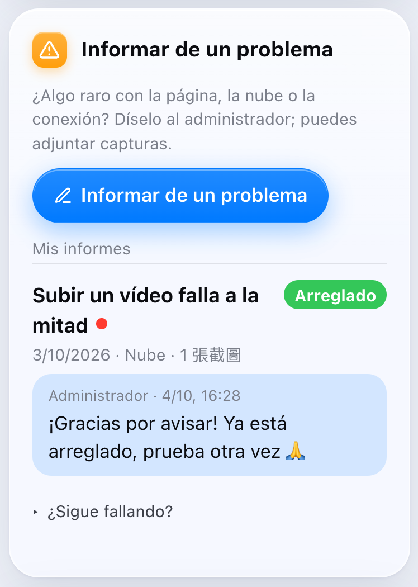
Solo rellénalo
- ¿Dónde está el problema?: elige nube, Internet / conexión, Mi página…
- ¿Qué tan grave es?: leve, algo de impacto o no funciona nada
- Describe lo que pasó en una frase: p. ej. «Subir un vídeo falla a la mitad»
- Detalles: opcional, pero ayuda a encontrar la causa antes
- Capturas: toca Elegir capturas y elige hasta 3 de tus fotos
- Toca Enviar informe; el móvil del administrador recibe un aviso al momento
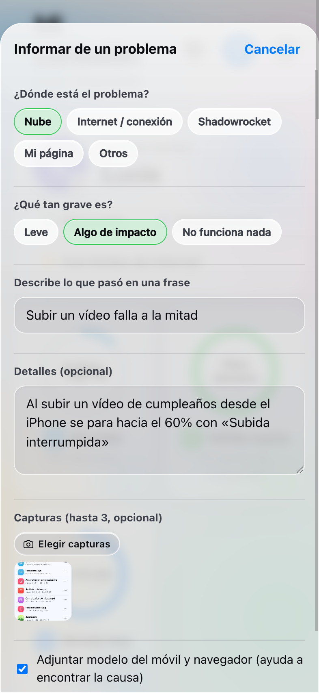
Mira la respuesta del administrador
- Cuando el administrador responde, aparece un punto rojo 🔴 junto al título
- La etiqueta de la derecha muestra el progreso: Nuevo → En curso → Arreglado
- Para añadir algo, escribe en el cuadro de abajo y toca Enviar
- ¿Marcado como «Arreglado» pero sigue fallando? Toca «¿Sigue fallando?» para avisar; el informe vuelve a su lista de pendientes
12. Si algo no funciona
Windows remoto: aparece en rojo «Falló la instalación» tras pegar el comando
- Comprueba que Tailscale está conectado abajo a la derecha en Windows, con la misma cuenta que en el móvil.
- El comando sirve una vez y durante 15 minutos: en el móvil toca Generar otro y pega el nuevo.
- Pégalo en PowerShell, no en el «Símbolo del sistema (cmd)».
Windows remoto: el PC siempre sale «Sin conexión» y los botones están grises
Sin Internet al activarlo
- Primero apaga y vuelve a encender el interruptor de Shadowrocket (o Tailscale).
- ¿Sigue sin ir? Apaga el interruptor por ahora y el móvil vuelve a su Internet normal.
- Avísale al administrador con Informar de un problema (elige «No funciona nada»): puede que el ordenador de casa esté apagado o que no haya Internet.
Mi página dice «acceso no activo» o sale texto en rojo
- Fuera del horario permitido: el administrador fijó en qué horas se puede usar; cuando llegue la hora funcionará.
- Caducado: terminó tu periodo de acceso; pregunta al administrador si lo amplía.
- Desactivado: el administrador lo apagó por ahora; pregúntale.
Dice «Se acabó el tiempo de hoy»
Mi página dice «Página no encontrada» o «la dirección ya no funciona»
Un punto rojo junto a «El Mac de casa» en Shadowrocket
Algunas apps o webs no abren
La subida falla con «Superas tu límite de espacio»
La copia automática de fotos no se hizo
- El atajo dice «El administrador no te ha permitido la copia automática de fotos»: pide al administrador que la active en el panel.
- Abre Atajos → «Automatización» y comprueba que la automatización está activa y en «Ejecutar inmediatamente».
- Toca ▶︎ a mano una vez y mira si sale algún mensaje de error.
- Dice «forbidden»: revisa que los nombres de los dos «encabezados» estén bien escritos (mayúsculas y minúsculas incluidas).
- Dice «Superas tu límite de espacio»: la nube está llena; borra archivos antiguos o pide más espacio al administrador.
Un amigo dice que el enlace no abre
Las fotos de la nube se ven grises, sin miniatura
No encuentro la página «Mac» en el panel
¿Y si cambio de móvil?
¿Puedo tener Shadowrocket y Tailscale activos a la vez?
13. Consejos de seguridad
- No envíes tu dirección personal a nadie ni la pongas en grupos
- No compartas capturas de tu QR de Shadowrocket
- Si se te escapa, avisa al administrador enseguida; puede darte uno nuevo y el anterior deja de funcionar al momento
- No des a nadie la dirección de subida de la copia de fotos; quien la tenga puede meter archivos en tu nube
- Una vez enviado un enlace, cualquiera que lo tenga puede descargar. Para archivos importantes, pon contraseña y caducidad
- Si alguien que dice ser el administrador te pide la contraseña o un código, llama primero a la persona real para comprobarlo